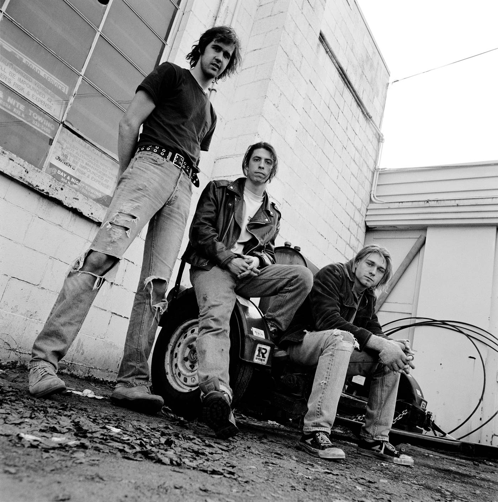
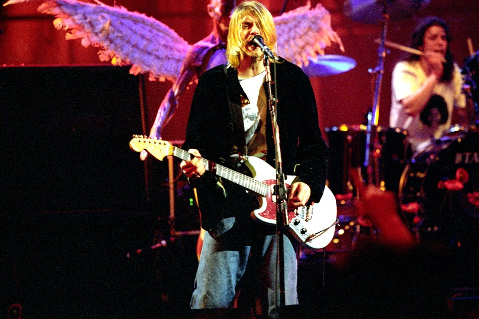
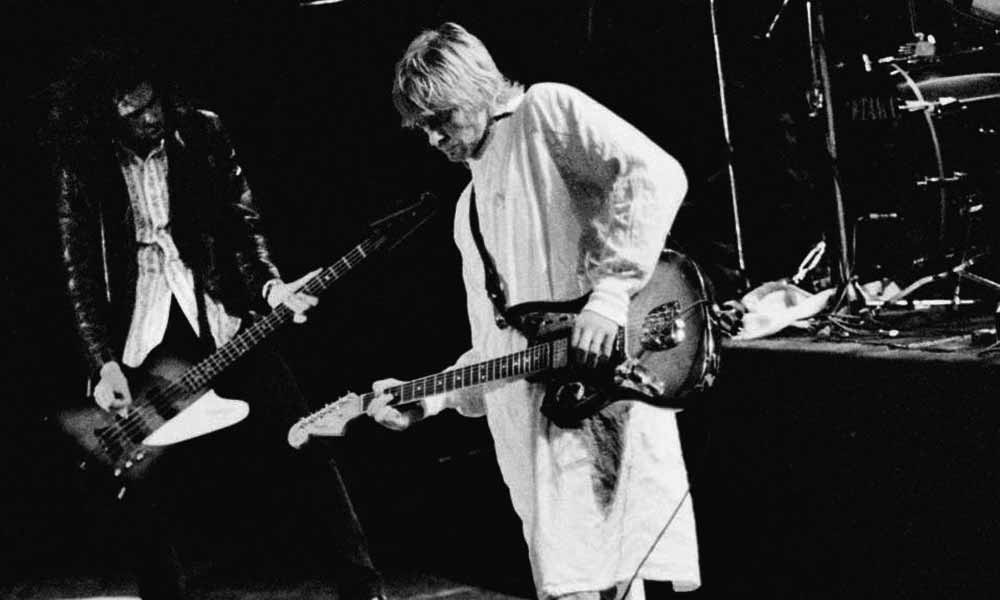
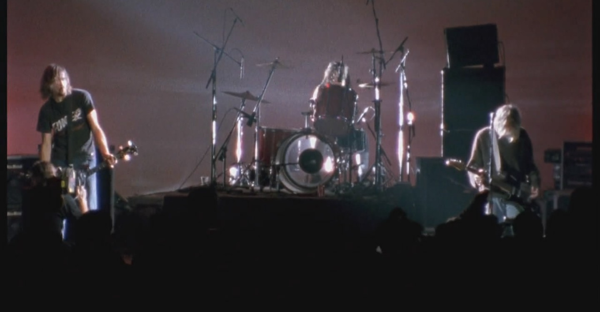

Gallery

Nirvana PhotoShot

Live and Loud concert released by American grunge band Nirvana in September 2013. It was released as part of the 20th anniversary of the band's third and final studio album, In Utero. It showcases the entirety of the band's December 1993 live performance at Pier 48, Seattle which was recorded by MTV for "Live and Loud".

Live at Reading concert by American grunge band Nirvana released on November 2, 2009, chronicling its performance at the Reading Festival in Reading, England, UK, on August 30, 1992. Bootlegged for years following the performance, the new issues present the performance for the first time mastered and color corrected.

Live at the Paramount concert video by the grunge band Nirvana released in 2011. It was released on DVD and Blu-ray Disc as part of the 20th anniversary of Nirvana's Nevermind album. It showcases a live performance at the Paramount Theatre in Seattle from October 31, 1991. The footage is taken from the only Nirvana show ever to be shot on 16 mm film.